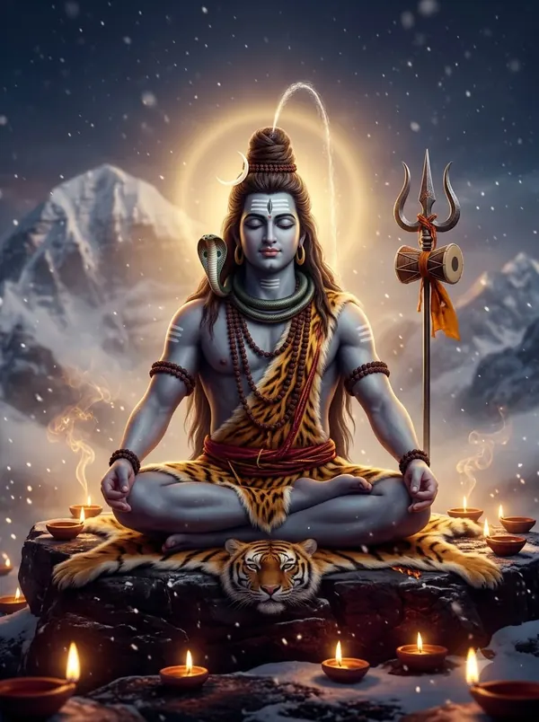

शिव तांडव स्तोत्रम् — पूरे श्लोक और हिंदी अर्थ
शिव तांडव स्तोत्रम् परंपरा से रावण की रचना माना जाता है। इसके श्लोकों में शिव के प्रचंड तांडव, जटाओं में गंगा, माथे की अग्नि और डमरू की ध्वनि का अद्भुत लयबद्ध वर्णन है।
अंतिम श्लोक के अनुसार प्रदोष काल में शिव-पूजा के बाद इसका पाठ विशेष फल देता है।

जटाटवीगलज्जलप्रवाहपावितस्थले गलेऽवलम्ब्य लम्बितां भुजङ्गतुङ्गमालिकाम्। डमड्डमड्डमड्डमन्निनादवड्डमर्वयं चकार चण्डताण्डवं तनोतु नः शिवः शिवम्॥
जटाओं के वन से बहती गंगा से पवित्र स्थान पर, गले में बड़े सर्पों की माला लटकाए, डमरू की डम-डम ध्वनि के साथ जिन्होंने प्रचंड तांडव किया, वे शिव हमारा कल्याण करें।
जटाकटाहसम्भ्रमभ्रमन्निलिम्पनिर्झरी विलोलवीचिवल्लरीविराजमानमूर्धनि। धगद्धगद्धगज्ज्वलल्ललाटपट्टपावके किशोरचन्द्रशेखरे रतिः प्रतिक्षणं मम॥
जिनकी जटाओं के कड़ाह में घूमती गंगा की चंचल लहरें सिर पर शोभा देती हैं, जिनके माथे पर धग-धग अग्नि जलती है और सिर पर बाल-चंद्रमा है, उन शिव में मेरा प्रेम हर क्षण बना रहे।
धराधरेन्द्रनन्दिनीविलासबन्धुबन्धुर स्फुरद्दिगन्तसन्ततिप्रमोदमानमानसे। कृपाकटाक्षधोरणीनिरुद्धदुर्धरापदि क्वचिद्दिगम्बरे मनो विनोदमेतु वस्तुनि॥
जो पर्वतराज की पुत्री पार्वती के विलास के साथी हैं, जिनका मन सारी दिशाओं के प्राणियों को देखकर प्रसन्न रहता है, जिनकी कृपा-दृष्टि बड़ी-बड़ी विपत्तियाँ रोक देती है, उन दिगंबर शिव में मेरा मन आनंद पाए।
जटाभुजङ्गपिङ्गलस्फुरत्फणामणिप्रभा कदम्बकुङ्कुमद्रवप्रलिप्तदिग्वधूमुखे। मदान्धसिन्धुरस्फुरत्त्वगुत्तरीयमेदुरे मनो विनोदमद्भुतं बिभर्तु भूतभर्तरि॥
जटाओं के सर्पों की फणों की मणियों की पीली चमक से जिनकी दिशाएँ रूपी स्त्रियों के मुख केसर से रँगे लगते हैं, जो मतवाले हाथी की खाल ओढ़ते हैं, उन प्राणियों के स्वामी शिव में मेरा मन अद्भुत आनंद पाए।
सहस्रलोचनप्रभृत्यशेषलेखशेखर प्रसूनधूलिधोरणी विधूसराङ्घ्रिपीठभूः। भुजङ्गराजमालया निबद्धजाटजूटक श्रियै चिराय जायतां चकोरबन्धुशेखरः॥
इंद्र आदि सब देवताओं के सिर के फूलों की धूल से जिनके चरण धूसर हैं, जिनकी जटा सर्पराज की माला से बँधी है, वे चंद्रशेखर शिव हमें लंबे समय तक समृद्धि दें।
ललाटचत्वरज्वलद्धनञ्जयस्फुलिङ्गभा निपीतपञ्चसायकं नमन्निलिम्पनायकम्। सुधामयूखलेखया विराजमानशेखरं महाकपालिसम्पदेशिरोजटालमस्तु नः॥
जिन्होंने माथे की अग्नि की चिंगारी से कामदेव को भस्म किया, जिन्हें देवताओं के राजा प्रणाम करते हैं, जिनके सिर पर चंद्रमा की कला शोभा देती है, उन जटाधारी महाकपाली शिव का वैभव हमें मिले।
करालभालपट्टिकाधगद्धगद्धगज्ज्वल द्धनञ्जयाहुतीकृतप्रचण्डपञ्चसायके। धराधरेन्द्रनन्दिनीकुचाग्रचित्रपत्रक प्रकल्पनैकशिल्पिनि त्रिलोचने रतिर्मम॥
जिन्होंने भयानक माथे पर धधकती अग्नि में प्रचंड कामदेव की आहुति दे दी, जो पार्वती के श्रृंगार की चित्रकारी करने वाले अनोखे कलाकार हैं, उन त्रिनेत्र शिव में मेरा प्रेम हो।
नवीनमेघमण्डली निरुद्धदुर्धरस्फुरत् कुहूनिशीथिनीतमः प्रबन्धबद्धकन्धरः। निलिम्पनिर्झरीधरस्तनोतु कृत्तिसिन्धुरः कलानिधानबन्धुरः श्रियं जगद्धुरंधरः॥
जिनका कंठ नए बादलों और अमावस की आधी रात के अंधेरे जैसा काला है, जो गंगा धारण करते हैं, हाथी की खाल पहनते हैं, चंद्रमा से सुंदर हैं और जगत का भार उठाते हैं, वे शिव हमें समृद्धि दें।
प्रफुल्लनीलपङ्कजप्रपञ्चकालिमप्रभा वलम्बिकण्ठकन्दलीरुचिप्रबद्धकन्धरम्। स्मरच्छिदं पुरच्छिदं भवच्छिदं मखच्छिदं गजच्छिदान्धकच्छिदं तमन्तकच्छिदं भजे॥
खिले नीले कमल जैसे काले कंठ वाले, कामदेव, त्रिपुर, संसार, दक्ष-यज्ञ, गजासुर, अंधकासुर और यम का भी अंत करने वाले शिव का मैं भजन करता हूँ।
अखर्वसर्वमङ्गलाकलाकदम्बमञ्जरी रसप्रवाहमाधुरी विजृम्भणामधुव्रतम्। स्मरान्तकं पुरान्तकं भवान्तकं मखान्तकं गजान्तकान्धकान्तकं तमन्तकान्तकं भजे॥
जो पार्वती की कलाओं के रस का आनंद लेने वाले भौंरे जैसे हैं, और कामदेव, त्रिपुर, संसार, यज्ञ, गजासुर, अंधकासुर और यम का अंत करने वाले हैं, उन शिव का मैं भजन करता हूँ।
जयत्वदभ्रविभ्रमभ्रमद्भुजङ्गमश्वस द्विनिर्गमत्क्रमस्फुरत्करालभालहव्यवाट्। धिमिद्धिमिद्धिमिध्वनन्मृदङ्गतुङ्गमङ्गल ध्वनिक्रमप्रवर्तित प्रचण्डताण्डवः शिवः॥
जिनके माथे की भयानक अग्नि तेज़ी से घूमते सर्पों की फुफकार से और भड़कती है, और जो मृदंग की धिम-धिम मंगल ध्वनि की लय पर प्रचंड तांडव करते हैं, उन शिव की जय हो।
दृषद्विचित्रतल्पयोर्भुजङ्गमौक्तिकस्रजोर् गरिष्ठरत्नलोष्ठयोः सुहृद्विपक्षपक्षयोः। तृणारविन्दचक्षुषोः प्रजामहीमहेन्द्रयोः समप्रवृत्तिकः कदा सदाशिवं भजाम्यहम्॥
पत्थर और सुंदर बिस्तर, साँप और मोती की माला, कीमती रत्न और मिट्टी का ढेला, मित्र और शत्रु, तिनका और कमल-नयनी, प्रजा और राजा — इन सबको समान देखते हुए मैं कब सदाशिव का भजन करूँगा?
कदा निलिम्पनिर्झरीनिकुञ्जकोटरे वसन् विमुक्तदुर्मतिः सदा शिरः स्थमञ्जलिं वहन्। विमुक्तलोललोचनो ललामभाललग्नकः शिवेति मंत्रमुच्चरन् कदा सुखी भवाम्यहम्॥
कब मैं गंगा के किनारे कुंज में रहकर, बुरे विचारों से मुक्त होकर, सिर पर हाथ जोड़े, चंचल नज़रें छोड़कर, शिव में मन लगाकर ‘शिव’ मंत्र जपता हुआ सुखी होऊँगा?
निलिम्पनाथनागरीकदम्बमौलिमल्लिका निगुम्फनिर्भरक्षरन्मधूष्णिकामनोहरः। तनोतु नो मनोमुदं विनोदिनीमहर्निशं परश्रियः परं पदं तदङ्गजत्विषां चयः॥
देव-स्त्रियों के बालों में गुँथे फूलों से टपकते पराग से सुंदर, परम शोभा के धाम शिव के अंगों की कांति हमारे मन को दिन-रात आनंद दे।
प्रचण्डवाडवानलप्रभाशुभप्रचारणी महाष्टसिद्धिकामिनीजनावहूतजल्पना। विमुक्तवामलोचनाविवाहकालिकध्वनिः शिवेति मन्त्रभूषणा जगज्जयाय जायताम्॥
पापों को बड़वाग्नि की तरह जलाने वाली, आठों सिद्धियों को बुलाने वाली, शिव-पार्वती विवाह के समय गूँजने वाली ‘शिव’ मंत्र की ध्वनि जगत की विजय के लिए हो।
इमं हि नित्यमेवमुक्तमुत्तमोत्तमं स्तवं पठन्स्मरन्ब्रुवन्नरो विशुद्धिमेतिसंततम्। हरे गुरौ सुभक्तिमाशु याति नान्यथा गतिं विमोहनं हि देहिनां सुशङ्करस्य चिंतनम्॥
जो इस उत्तम स्तोत्र को रोज़ पढ़ता, याद करता या बोलता है, वह सदा शुद्ध होता है और जल्दी ही गुरु शिव की भक्ति पाता है; शंकर का चिंतन ही प्राणियों का मोह दूर करता है।
पूजावसानसमये दशवक्त्रगीतं यः शम्भुपूजनपरं पठति प्रदोषे। तस्य स्थिरां रथगजेन्द्रतुरङ्गयुक्तां लक्ष्मीं सदैव सुमुखिं प्रददाति शम्भुः॥
जो प्रदोष काल में शिव-पूजा के अंत में रावण द्वारा गाया यह स्तोत्र पढ़ता है, शंभु उसे रथ, हाथी और घोड़ों से युक्त स्थिर लक्ष्मी देते हैं।
शिव तांडव स्तोत्रम् का पाठ पूरा हुआ।
किसी अपने को WhatsApp पर भेजेंपाठ पारंपरिक है और अलग-अलग क्षेत्रों में शब्दों में थोड़ा अंतर मिलता है। अर्थ सरल हिंदी में OmKiran Bhakti ने लिखा है। कोई त्रुटि दिखे तो YouTube पर कमेंट करके बताएँ।